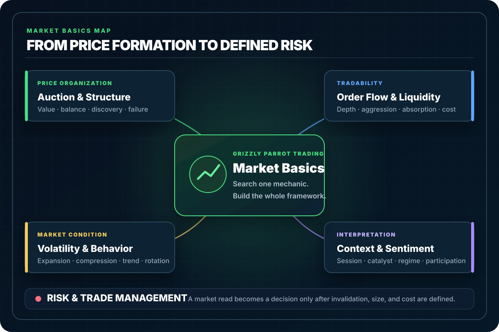

Market Auction Basics: How Price Finds Value Through Buyers and Sellers
Learn market auction basics—value areas, balance, imbalance, and how the market discovers fair price through active bidding and offering.
Market Basics directory
Updated August 6, 2026
Search the complete 200-guide Market Basics library by concept or trading problem. Use the filters to browse auction and structure, liquidity and order flow, volatility and behavior, market context, and risk.

Complete Market Basics index
Every indexed guide in this section appears below. Search from the field above, select one topic, or browse the first results and load more.
200 linked guidesDirect access—no account or sign-in required.
Learn market auction basics—value areas, balance, imbalance, and how the market discovers fair price through active bidding and offering.
Learn liquidity basics—how liquidity affects volatility, fills, order flow, and why thin markets create traps for new traders.
Learn the basics of market structure: trends, ranges, highs, lows, and how real traders read the chart without indicators or guessing.
Learn the basics of market order flow—market orders, limit orders, absorption, imbalances, and how real buying and selling move price.
Learn the basics of market volatility, why it spikes, how it affects your trades, and what beginners must watch to avoid getting steamrolled.
Calculate futures position size from usable drawdown buffer, stop distance, tick value, costs, and safety reserve, with MES and prop examples.
Complete futures whipsaw guide: false-break conditions, acceptance and rejection, structural stops, order types, risk sizing, and an interactive plan lab.
A clear explanation of drawdown in trading: what it measures, why it happens, and how it affects futures accounts and prop firm evaluations.
Learn how absorption works, how the market eats aggressive orders without moving, and how to use absorption signals to spot reversals early.
Learn the key DOM trap patterns that expose aggressive buyers or sellers getting stuck and how these traps create clean reversal opportunities.
Learn how auction curves explain trending, ranging, and rotational behavior by showing how the market searches for fair and unfair prices.
A direct guide to auction pressure points—the spots where orderflow builds tension and the next move becomes inevitable.
Learn how auction tail rejections work, what long wicks actually mean in the auction process, and how to identify failed directional pushes with precision.
Learn which market health indicators matter, how they shape context, and why overall strength often decides if a move holds or fails.
Learn how to identify buyer and seller failure zones—critical areas where one side finally gives up control and the market shifts direction.
Climax volume explained—why huge volume spikes often signal the end of a trend and what they reveal about trapped traders and market exhaustion.
Learn how cumulative volume delta reversals reveal shifts in buyer and seller control and how to use CVD to confirm or fade price moves.
Learn why disbelief rallies and bear market traps happen, what fuels the explosive upside, and how to avoid getting caught fading the move.
Learn what displacement candles really mean, how they signal trend initiation, and how to trade them without guessing.
Learn how excess at extremes marks true auction termination, how to read TPO tails, and when a move is actually finished instead of just pausing.
Traders lose money even when direction is right. This breaks down execution failures that destroy good ideas: entries, stops, sizing, slippage, and management.
Exhaustion gaps explained—why they form, how to spot them, and what it means when the market ends a trend with one last explosive move.
Learn how to identify exhaustion moves, the signals that a trend is losing strength, and how to avoid entering right before reversals.
Learn how exhaustion prints reveal trend failure, where buyers or sellers run out of fuel, and how to spot these signals in real-time futures trading.
A blunt explanation of failed breakouts, why markets fake direction, and how to trade the snap-back move that catches most traders off guard.
Failed breakouts explained—why markets fake a breakout, trigger traders in the wrong direction, and then violently reverse back into the range.
Learn how to spot failed continuation patterns and avoid getting trapped when a trend pretends to continue but breaks down fast.
Learn Fair Value Gaps basics—why FVGs form, how they signal imbalance, and how traders use them to read real displacement in price.
Learn how to identify false liquidity zones—levels that appear strong but collapse instantly when hit by real order flow.
False momentum explained—why some fast moves look powerful but have no real strength behind them, and how to spot the difference.
Hidden liquidity explained: why iceberg orders, dark pools, and invisible bids/offers move markets even when the chart shows nothing.
Learn how high-volume node rejection zones work, why price snaps away from dense volume areas, and how to use HVN edges for precision entries.
Learn why markets move faster through low-volume areas and stall in high-volume zones. A blunt breakdown of true path-of-least-resistance behavior.
A blunt breakdown of auction theory, how markets discover value, and why every price swing follows simple auction mechanics.
A blunt breakdown of how major economic reports move the market, why volatility spikes instantly, and what traders should watch before news hits.
A blunt breakdown of economic surprise indexes, how they measure expectation vs reality, and why they spark strong market reactions.
A blunt explanation of how institutional traders move markets quietly, hide their size, and manipulate liquidity without obvious traces.
Learn how liquidity grabs form, why they trigger reversals, and how to spot the trap before the market snaps back.
A blunt explanation of liquidity pools, why price targets them, and how traders use these zones to anticipate market movement.
A blunt explanation of how liquidity providers operate, how they control spreads, and why traders need to understand their role to avoid bad fills.
A blunt breakdown of market regime shifts, how trends flip into ranges or volatility spikes, and how traders can recognize regime changes early.
A direct breakdown of how market sentiment controls price movement, why crowd expectations matter, and how sentiment shifts create tradeable moves.
Learn how time of day impacts market behavior, volatility, liquidity, and trade quality across major sessions and key intraday windows.
A blunt breakdown of how volume validates or invalidates price action, and how traders use volume behavior to avoid fake moves.
Learn the key signals that reveal market exhaustion—how to spot fading momentum, liquidity shifts, and failed continuation before a reversal hits.
Learn the difference between balance and imbalance zones, how the market rotates between them, and how to trade each environment without getting chopped up.
Learn to spot imbalanced auction signals—early warnings that one side of the market is dominating and a directional move is building.
Impulse legs explained—why strong directional moves show the market’s true intent and how traders use them to interpret trend strength.
Learn the difference between impulse and rotational market behavior, how to classify state quickly, and what each environment means for trade selection.
Learn the difference between initiative and responsive activity, how each side drives or defends price, and how to read who actually controls the auction.
Learn how lead-lag relationships work, which markets tend to move first, and how to use that information without overthinking every tick.
Learn liquidity ladder analysis, how vertical absorption works, and where failure points reveal clean reversal or continuation opportunities.
Learn how liquidity layers work, why stacked buy and sell levels control price movement, and how traders can read these zones with precision.
Learn how liquidity levels work, why the market reacts to them, and how to use them to avoid getting caught in bad entries.
Liquidity migration isn’t a strategy. It’s a market event. This guide explains what causes liquidity to shift in futures markets and why it matters.
Learn liquidity pools basics—where stops and pending orders cluster, how price raids them, and how to stop trading straight into the flush.
Learn how liquidity rebuilds after fast moves, why markets slow down in refill zones, and how these areas shape future rotations and trend attempts.
A blunt guide to liquidity shift signals—how to spot when buyers or sellers lose control and how that shift drives the next move.
A blunt breakdown of liquidity sweeps, why price runs levels aggressively, and how these sweeps set up high-probability reversals and continuation moves.
A blunt guide to liquidity voids and price magnets—why price snaps back into thin areas of trading and how to use those gaps to your advantage.
A blunt breakdown of liquidity voids, why price accelerates through inefficient zones, and how these areas guide future targets and reversals.
Learn what liquidity voids are, why price rips through empty areas on the chart, and how to use them to plan entries, exits, and targets.
Learn why liquidity voids cause sudden fast moves, how to recognize these empty-price areas, and how to trade around them with precision.
A blunt guide to market absorption—how large passive orders stop momentum, reverse moves, and reveal real buying and selling pressure.
A blunt breakdown of recurring market anomalies, why they keep happening, and how traders exploit these repeatable patterns.
Learn the difference between efficient and inefficient market auctions, why price sometimes moves cleanly and sometimes chaotically, and how to trade both.
Learn market breadth basics—advance/decline, volume flow, sector participation—and how breadth confirms real trends or exposes fake moves.
Learn how market context stacking works, how to align structure, volume, liquidity, and orderflow, and why one signal alone is never enough.
Learn how market context shapes every trade, why ignoring it leads to false signals, and how to read the bigger picture before pulling the trigger.
Learn the basics of market correlations, why assets move together, and how correlation affects your trade timing, risk, and strategy.
A blunt breakdown of market depth and the DOM, how to read liquidity on both sides of the book, and what it actually tells you about incoming moves.
Learn market efficiency basics—why price adjusts quickly, how information gets priced in, and what inefficiencies traders can actually use.
A blunt breakdown of market efficiency vs. inefficiency, what each one means for traders, and how to recognize when the market is giving you an edge.
Learn how market elasticity works, why aggressive pushes often snap back, and how to read stretched auction conditions before the reversal hits.
Understand how market energy builds, why tension leads to explosive moves, and how to recognize pressure before the breakout happens.
A blunt guide to market failure patterns—why moves stall, reverse, or collapse when the auction breaks down and liquidity shifts.
Market gaps explained in plain English: why they happen, how they form, and what traders should look for when price jumps with no warning.
A blunt breakdown of market imbalance, what causes buyers or sellers to overwhelm the tape, and how to read these shifts before price runs.
A blunt breakdown of market imbalances, why they form, and how price corrects these inefficient zones during normal auction flow.
Learn why markets revisit inefficiencies, how fill patterns work, and how to read price behavior inside liquidity voids.
A blunt breakdown of market inefficiency signals—what they look like, why they form, and how they warn you a sharp move is coming.
Learn the basics of market internals—advance/decline, volume, breadth, and volatility—and how they reveal the real strength behind price action.
Learn the basics of market liquidity, how depth affects fills, volatility, and slippage, and why beginners blow trades by ignoring it.
A blunt breakdown of market liquidity shocks, why they happen, what they do to price, and how traders can avoid getting blindsided when depth collapses.
A blunt breakdown of market maker inventory, how dealers balance risk, and why their inventory levels directly impact volatility and price movement.
Learn market microstructure basics: how orders become trades, how liquidity forms, and what really drives short-term price movement.
Learn what market microstructure noise is, why it clutters your charts and order flow tools, and how to filter meaningless activity in real-time futures trading.
A blunt breakdown of market microstructure, how orders actually get filled, and why understanding this hidden engine changes how you read price.
Learn how to identify market momentum shifts and read when buying or selling strength flips. A blunt, beginner-friendly breakdown of real market behavior.
Learn how to read market momentum, spot real strength, identify exhaustion early, and avoid buying the top or shorting the bottom.
Learn how to analyze market session overlaps, what continuity really means, and how to read transitions between sessions without guessing.
A direct breakdown of market participant behavior—who moves price, who absorbs it, and how each group shapes the auction in real time.
Learn the basics of market participants, who they are, how they trade, and how their behavior drives price moves you see on your screen.
Learn how a market power shift happens in real time, how control flips from buyers to sellers, and how to read the signs before price reverses.
Learn how to read buy pressure and sell pressure so you can see who is winning the fight and avoid trading against the dominant side.
Learn Market Profile basics—value area, POC, single prints, and distributions—so you can read where the market accepts and rejects price.
Learn the difference between reaction moves and continuation moves so you stop mistaking a bounce for a reversal or a pullback for a trend shift.
Learn the basics of market regimes—trending, ranging, and chaotic—and how each regime changes volatility, liquidity, and execution quality.
A blunt breakdown of market regimes, the difference between trending and ranging conditions, and how identifying the regime prevents bad trades.
Learn market rotation basics—index rotation, sector rotation, and intraday auction rotation, and how they interact to shape futures price action.
A blunt breakdown of market rotation patterns, how price cycles between zones, and how these rotations reveal the real structure of the market.
Learn how market rotation works, why money flows between sectors and indexes, and how these shifts signal strength, weakness, and trend changes.
Learn the basics of market sentiment, how crowd psychology drives price movement, and how traders can read sentiment without guessing.
A direct explanation of market sentiment, how traders measure it, and why understanding emotions in the market helps you avoid dumb trades.
Market sentiment is just fear and greed on a chart. Learn what it is, how traders measure it, and how to stop trading against the crowd blindly.
Learn market session basics—RTH vs Globex, how volume, volatility, and liquidity change, and how these shifts affect your futures trading.
Learn to read stalling behavior and spot dying momentum before reversals hit. Know when a trend is out of fuel.
Learn how to identify market structure breaks, what they signal, and how to use them to catch trend shifts early while avoiding fake reversals.
A no-nonsense guide to market transition zones—areas where control shifts between buyers and sellers before major moves start.
Learn how bull traps and bear traps form, the tells that expose them early, and how to avoid getting caught on the wrong side.
A blunt breakdown of volatility cycles, why markets rotate between calm and violent phases, and how traders should adjust during each cycle.
Learn mean reversion basics—what it is, when it works, when it fails, and how to avoid shorting every rip in a strong trend like a clown.
Learn how mean reversion traps form, why traders get stuck in them, and how to avoid blowing up by fading moves that never return.
A blunt breakdown of mean reversion vs. momentum, why markets switch between these behaviors, and how traders can stop using the wrong approach at the wrong time.
A blunt breakdown of mean reversion vs trend continuation, how to spot each behavior, and why traders constantly confuse the two.
Learn how mean reversion works, why markets snap back to value, and how to avoid fighting the moments when price rubber-bands against you.
Learn how micro auctions inside candles work, what internal rotation reveals about control, and how to read these tiny auctions with order flow context.
Learn how micro pullback structure confirms trend strength, exposes weak moves, and helps you avoid fake breakouts in real-time trading.
Micro pullbacks show whether buyers or sellers truly control the move. Learn how tiny retracements expose real market intent and trend quality.
Microstructure imbalance in futures trading: how orderflow skews before price moves, how to read it from the tape, and how to avoid fading strong moves.
Learn how momentum exhaustion bars form, what they reveal about dying trends, and how to use them to avoid chasing the final move.
Learn how momentum traps work, why fast price moves lure traders into bad positions, and how to spot when speed is real versus deceptive.
Learn the three major open auction types—balanced, test-drive, and imbalanced—and how each one sets the tone for the trading session.
Learn the difference between an opening drive and an opening reversal so you stop fighting the first move of the session and trade with the real intent.
Order absorption explained—why big orders get eaten without price moving, how absorption signals strength, and what it means for traders.
Learn order block basics—what order blocks are, how institutions create them, and how traders use them for entries, stops, and bias.
A blunt breakdown of order book depth, what it actually reveals, and how traders can use depth to understand liquidity and price behavior.
A blunt breakdown of order book dynamics, how liquidity shifts in real time, and why these changes often signal where price is about to move.
Learn what order book spoofing looks like, how fake liquidity can distort the tape, and how to recognize common spoofing-style patterns without overreacting.
Learn how order book thin zones form, why price accelerates through them, and how to avoid getting caught in fast one-directional moves.
Learn how order book walls work, how large resting liquidity affects short-term movement, and how to read walls for better trade timing.
A blunt breakdown of order flow absorption, how large players halt aggressive buying or selling, and why absorption often signals the next major move.
Learn the real signs of order flow continuation, how sustained buying or selling pressure behaves, and how to read it without guessing.
Learn what order flow imbalance is, how shifts in aggressive buying or selling move futures markets, and how to read these signals without overcomplicating it.
Order flow imbalance explained in plain English—how buyers or sellers take control, what it looks like, and how to trade around one-sided markets.
Learn how order flow reversals form, how aggression flips sides, and the exact signals that reveal when a market trend is about to turn.
Learn how order flow shifts reveal which side is taking control, how to spot those shifts early, and how to avoid getting caught on the wrong side.
Learn how orderflow pivots reveal real shifts in market control, how to spot them early, and how to trade the transition without guessing.
Parabolic moves explained—why markets go vertical, what fuels the blow-off phase, and how to avoid getting trapped in unsustainable price spikes.
Learn how pre-market structure sets the tone for the trading day and why levels formed before the open often dictate the first hour of price action.
Learn the difference between price acceptance and price rejection, how to recognize each fast, and how they shape intraday futures behavior.
Learn price action compression basics: why markets coil into tight ranges, how to identify compression, and what to expect when it breaks.
Learn price action expansion basics: what expansion is, why it happens, how to read breakouts, and how to trade the shift from compression into volatility.
A blunt breakdown of price discovery, how buyers and sellers set fair value, and why understanding this process keeps you from chasing dumb trades.
A blunt explanation of price discovery vs. price delivery, how they differ, and why understanding both is mandatory for reading market movement.
A blunt explanation of price efficiency, market inefficiency, and how to spot areas where price is moving cleanly or leaving exploitable voids.
A blunt breakdown of price gaps, why they form, why markets often fill them, and what these gaps really signal about liquidity and imbalance.
Learn why some price levels act like magnets—pulling the market in regardless of trend, volatility, or sentiment.
Price whipsaws are violent snap-backs after sharp moves. Learn why they happen, where they form, and how to avoid getting shredded by fast reversals.
Learn how to identify reaction zones where the market has to make a decision, and use them to plan cleaner entries, stops, and targets.
Learn how to measure relative performance across indexes and sectors so you can spot strength, weakness, and divergence before price moves.
A blunt breakdown of repricing events, why markets move instantly, and how to trade the violent adjustments without getting steamrolled.
A blunt breakdown of risk events, how markets price uncertainty, and why risk premium rises long before the event itself hits the tape.
Learn Risk-On vs Risk-Off basics—how shifting sentiment impacts futures markets, volatility, and cross-asset rotation.
Session opens and closes in futures trading: why timing matters, where volatility spikes, and how to build a plan around key session windows.
Learn how to read session skew on a profile, which side of the distribution is stronger, and what that means for continuation or reversal risk.
Learn how smart money accumulation and distribution shape major market moves, where these phases show up, and how to read them early.
Learn how stop cascade dynamics work, how forced liquidations drive extreme moves, and what signals warn you that a cascade is about to hit.
Stop runs and liquidity hunts in futures: why your levels keep getting tagged, how smart money uses your stops as fuel, and how to stop feeding the trap.
A blunt breakdown of stop runs—why the market hunts stops, how it works, and why price spikes through obvious levels before reversing.
A blunt breakdown of stop-run mechanics, why the market targets obvious stops, and how liquidity behavior turns those levels into fuel for fast moves.
Learn how structural breaks reveal a true shift in market direction and how to identify them without indicators or guesswork.
Learn how structural pivots form, how to identify real turning points, and how to avoid mistaking noise for a reversal.
Learn how structural shifts expose early trend reversals, what triggers them, and how to read the transition before the crowd notices.
Learn what swing highs and lows reveal about structure, strength, and momentum so you stop entering trades with no context.
Learn tape reading basics—how to read Time & Sales and DOM pressure together to understand real-time order flow and aggressive buying or selling.
A blunt breakdown of the imbalance-to-balance cycle, why markets shift between chaos and structure, and how to trade each phase confidently.
Market overreaction explained: why price overshoots during news, panic, or hype, and how to trade around exaggerated moves with precision.
A blunt breakdown of time-of-day volatility patterns, why certain hours explode while others die out, and how traders can adjust expectations to avoid bad entries.
Learn how TPO clusters form on Market Profile charts, what they say about acceptance, value, and imbalance, and how to actually use them in your trading.
A straight explanation of how to manage trades, hold winners, cut losers, and avoid blowing up through bad behavior.
A blunt breakdown of the three major trading sessions—Asia, London, and New York—and how each one affects volatility, volume, and price behavior.
Learn the real differences between trending and choppy markets, how to identify each early, and how to avoid getting chopped to death.
Learn how two-way auctions expose trend weakness, where failure points form, and how to read the shift before a trend collapses.
A clear, blunt explanation of liquidity gaps, why they form, and how these voids affect price movement in real trading conditions.
A blunt breakdown of volatility clustering, why markets shift between calm and chaotic periods, and how traders can read these cycles.
Learn volatility clustering basics: why markets flip between quiet and explosive periods, and how to read shifting volatility conditions.
Learn why volatility compression always leads to expansion, how to read squeeze conditions, and how traders position before the breakout.
A blunt breakdown of volatility cycles, why markets alternate between quiet and explosive periods, and how traders can use these shifts to avoid bad entries.
Learn how volume clusters form, why dense trading areas matter, and how they influence future market movement and price reactions.
Learn how to spot real volume divergence, why price can move without participation, and how to avoid getting trapped by fake momentum moves.
Learn how to read volume divergence—when price moves without real participation—and spot weak trends, traps, and upcoming reversals.
Learn how volume nodes work, why certain prices pull the market in, and how traders use high and low volume areas to predict reactions.
Learn how volume trend analysis works and how rising or falling participation reveals real market conviction, trend quality, and future direction.
A blunt explanation of market catalysts, how they trigger fast price movement, and how traders use catalysts to time entries and manage risk.
Learn why midpoint retests happen in auction markets, what they signal about control, and how to use them for high-confidence entries.
Learn what causes market volatility, why it expands or collapses, and how to stop getting blindsided when volatility spikes out of nowhere.
A blunt breakdown of what actually drives market volatility, why markets snap from calm to chaotic, and how traders can read volatility signals early.
Learn what market microstructure is, how orders interact beneath the surface, and why understanding it helps beginners avoid blind trading decisions.
Learn what slippage in trading is, why your orders don’t always fill at the price you expect, and practical ways to reduce its impact on your P&L.
A blunt explanation of market correlation, how assets move together or diverge, and why correlation matters for every trading decision you make.
A blunt explanation of why markets consolidate before major breakouts, what consolidation really means, and how traders can read these setups.
Why \
Learn why markets consolidate before big moves, what that sideways price action signals, and how to trade the buildup without getting chopped to death.
Learn why markets gravitate toward round numbers, why big figures attract liquidity, and how traders use these psychological levels.
A blunt explanation of why markets overshoot key levels, what causes the retrace, and how traders can use these behaviors to their advantage.
Market memory explained: why price reacts to old highs and lows, why certain levels stick, and how traders turn memory into an edge.
Learn why technical analysis breaks down in low-liquidity markets, what actually drives price in thin conditions, and how to adapt your trading.
Learn why trends stall at compression zones, what that tight price action signals, and how to trade the pressure buildup before expansion.
Learn why volume often collapses before major reversals, what that drying-up flow signals, and how to use it to time the turn.
Try fewer words, a related term, or clear the active topic filter.
New to market mechanics?
This sequence moves from price formation to execution risk. Each guide answers one specific question before the next layer is added.
Price formation
See how bidding, offering, balance, imbalance, and value interact.
Framework
Organize trends, ranges, swing points, acceptance, and failure without treating every move as a setup.
Tradability
Understand depth, transaction cost, price impact, and why thin conditions change execution.
Executed activity
Separate executed buying and selling from predictions about what must happen next.
Movement
Study expansion, compression, range, and why risk changes with the speed of price.
Dollar risk
Fit whole contracts to a technically valid stop and the account's real usable buffer.
Choose a learning path
Market mechanics overlap. These routes keep related questions together without pretending that one indicator or pattern explains the whole auction.
Auction & structure
Liquidity & flow
Behavior & context
Risk & execution
Structured long-form study
The directory answers individual questions. The books connect instruments, participants, liquidity, catalysts, correlations, execution, and risk into a longer framework.
View all books and formatsFrequently asked questions
Start with auction and market structure, then learn liquidity, order flow, volatility, market context, and explicit risk. This order separates how price forms from how a trader controls exposure.
Liquidity describes the ability to transact without excessive price impact, while volatility describes the size and speed of price movement. They interact, but they are not the same measurement.
No. Order flow shows executed activity and changes in aggression or absorption, but it does not guarantee the next price move. It must be interpreted with location, liquidity, regime, and risk.
The same pattern can behave differently across sessions, volatility regimes, catalysts, and liquidity conditions. Context helps define when a signal is relevant and what would invalidate it.
No. Market Basics is an educational reference library. It explains mechanics, evidence, and planning frameworks rather than providing personalized recommendations or guaranteed setups.
Source disclosure
This directory organizes Grizzly Parrot Trading's market-mechanics guides. Individual guides identify the sources relevant to their exact claims. Futures obligations, leverage, margin, order behavior, and customer risk should always be checked against current exchange, regulator, and broker materials.